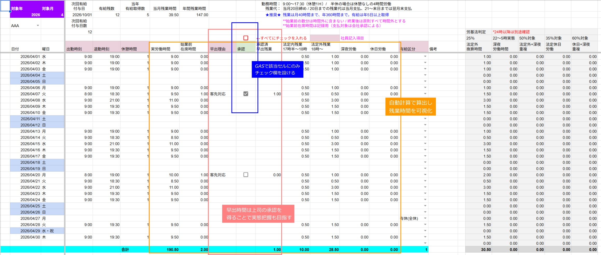
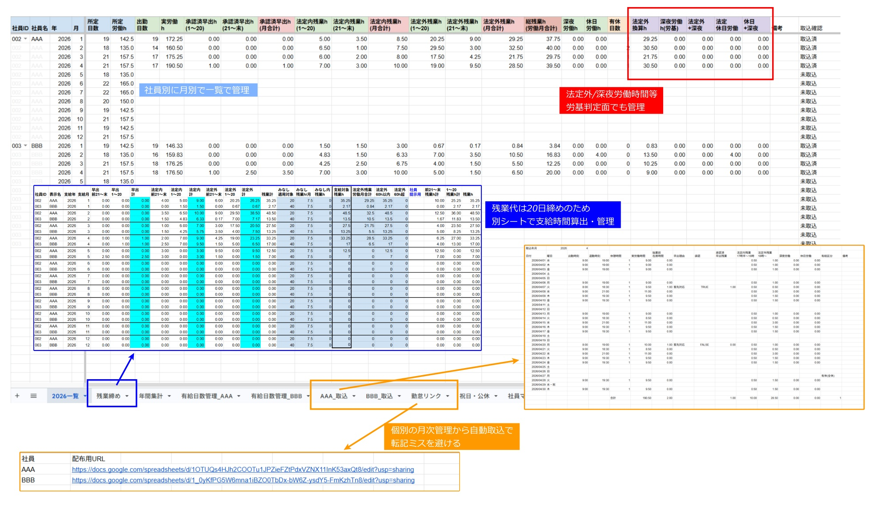
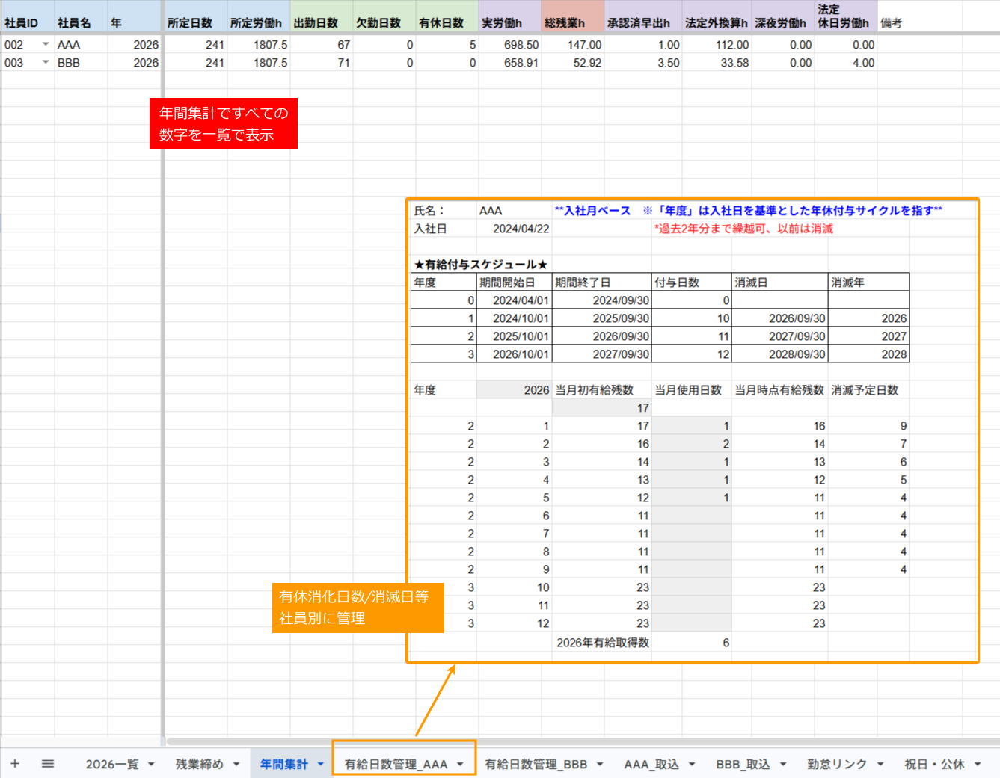
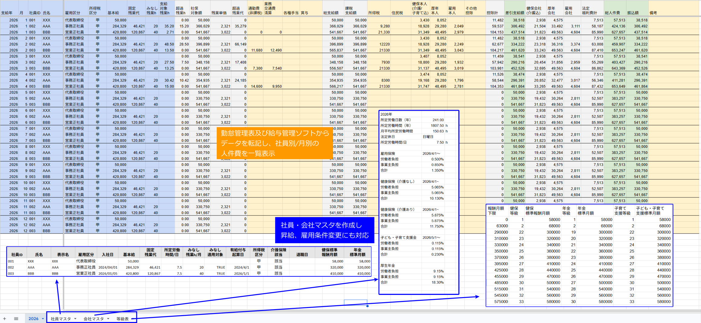

Google Sheets を用いて制作した勤怠・給与管理シートです。
従業員ごとの勤怠集計、残業計算、有給管理、給与計算を個別に行っており、集計ミスや確認工数が発生していました。
そこでGoogle SheetsとGoogle Apps Scriptを活用し、
勤怠入力・集計・有給管理・給与計算までを
一元管理できる仕組みを構築しました。




Logistics x IT
クリックで閉じる